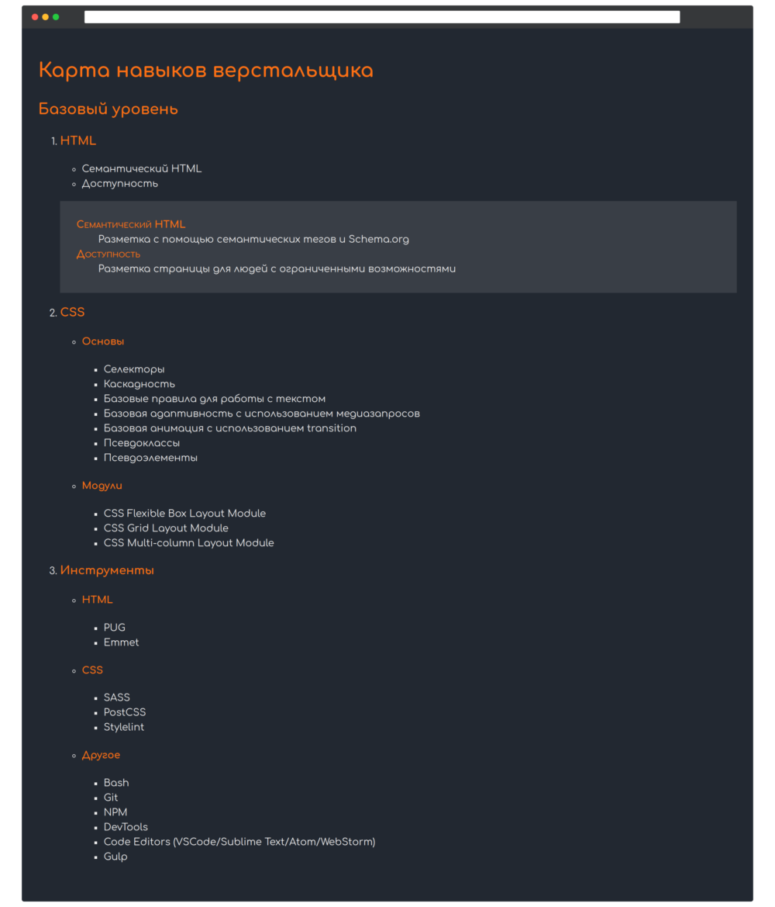

Создайте разметку базового уровня карты навыков верстальщика.

Структура разметки:
- Заголовок первого уровня: Карта навыков верстальщика
- Заголовок второго уровня: Базовый уровень
-
Нумерованный список из трёх заголовков третьего уровня:
- HTML
- CSS
- Инструменты
HTML
Раздел HTML содержит маркированный список из двух элементов:
- Семантический HTML
- Доступность
Для более подробного описания используется список определений:
- Семантический HTML — Разметка с помощью семантических тегов и Schema.org
- Доступность — Разметка страницы для людей с ограниченными возможностями
Основной контейнер списка определений имеет класс .definitions.
Название термина имеет класс .definitions-term.
CSS
Раздел CSS содержит маркированный список из двух заголовков четвёртого уровня:
- Основы
- Модули
Раздел «Основы» так же содержит маркированный список из следующих элементов:
- Селекторы
- Каскадность
- Базовые правила для работы с текстом
- Базовая адаптивность с использованием медиазапросов
- Базовая анимация с использованием transition
- Псевдоклассы
- Псевдоэлементы
Элементы раздела «Модули»:
- CSS Flexible Box Layout Module
- CSS Grid Layout Module
- CSS Multi-column Layout Module
Инструменты
Раздел «Инструменты» содержит маркированный список из трёх заголовков четвёртого уровня:
- HTML
- CSS
- Другое
Инструменты раздела «HTML»:
- PUG
- Emmet
Инструменты раздела «CSS»:
- SASS
- PostCSS
- Stylelint
Инструменты раздела «Другое»:
- Bash
- Git
- NPM
- DevTools
- Code Editors (VSCode/Sublime Text/Atom/WebStorm)
- Gulp